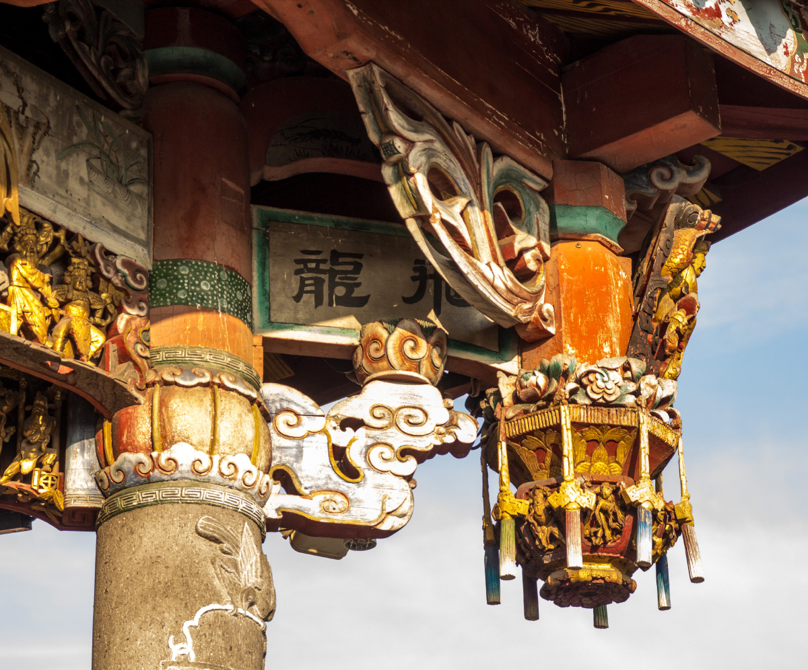
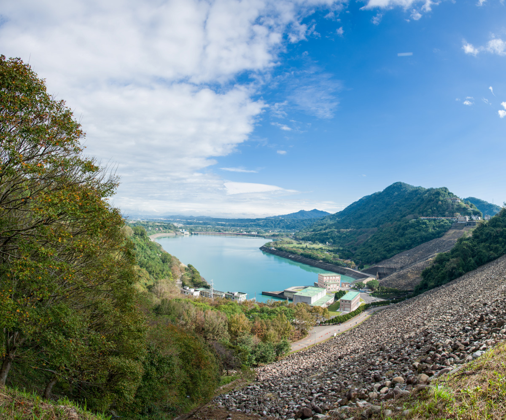
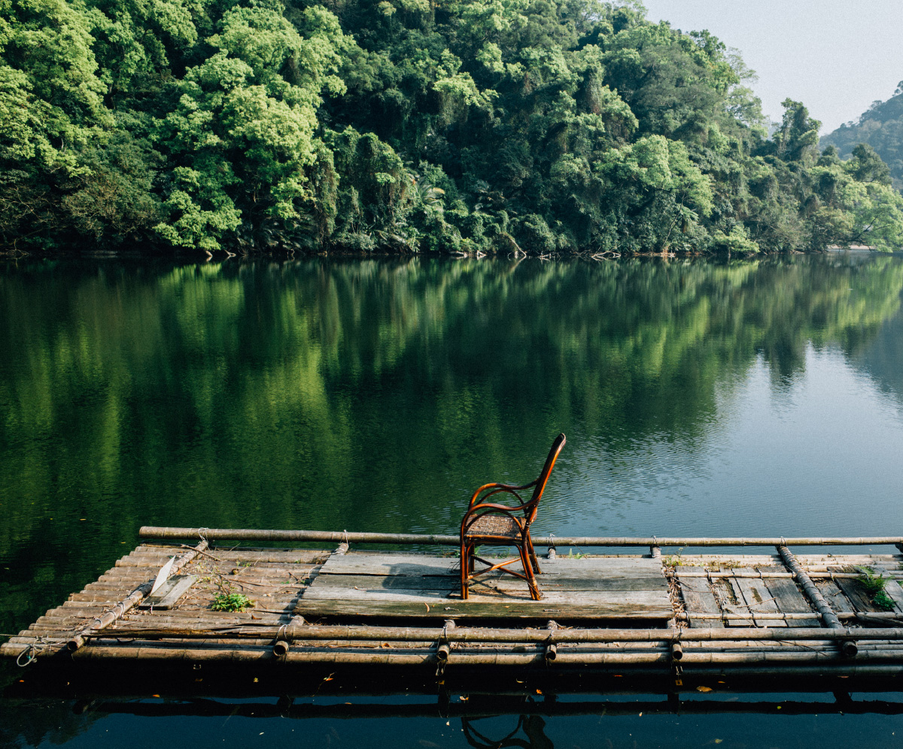
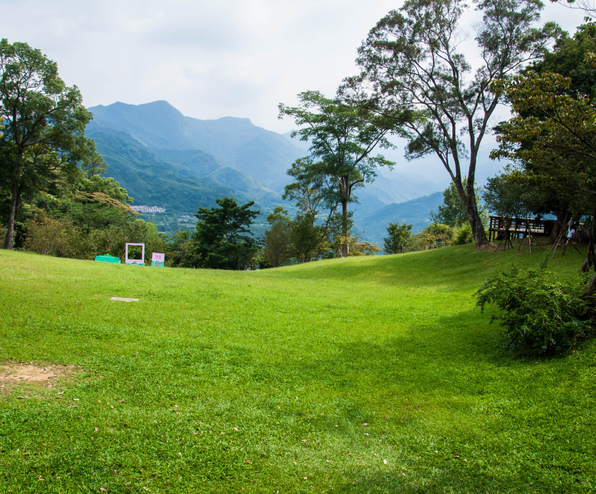
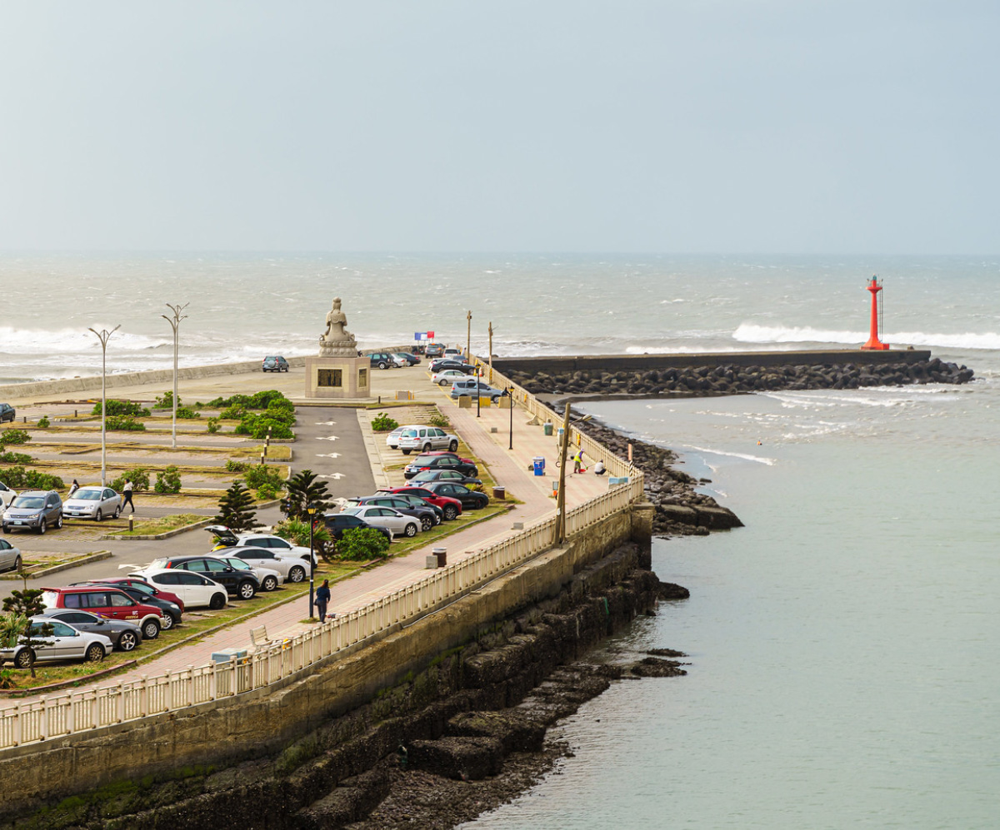
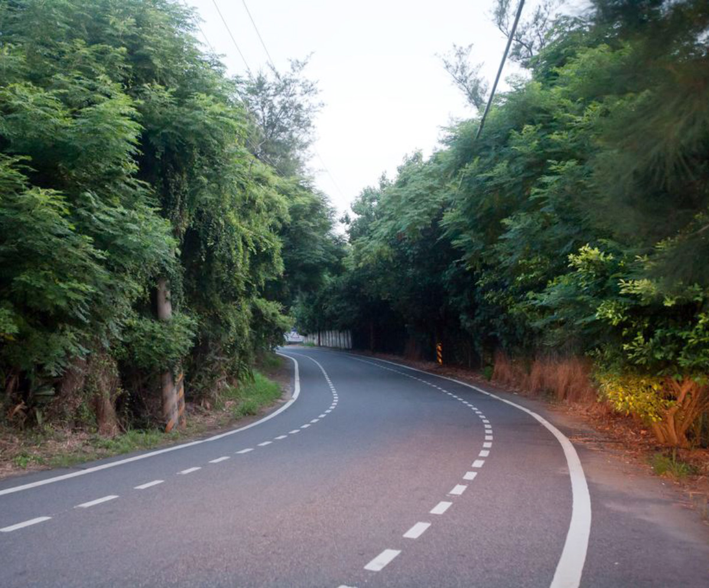
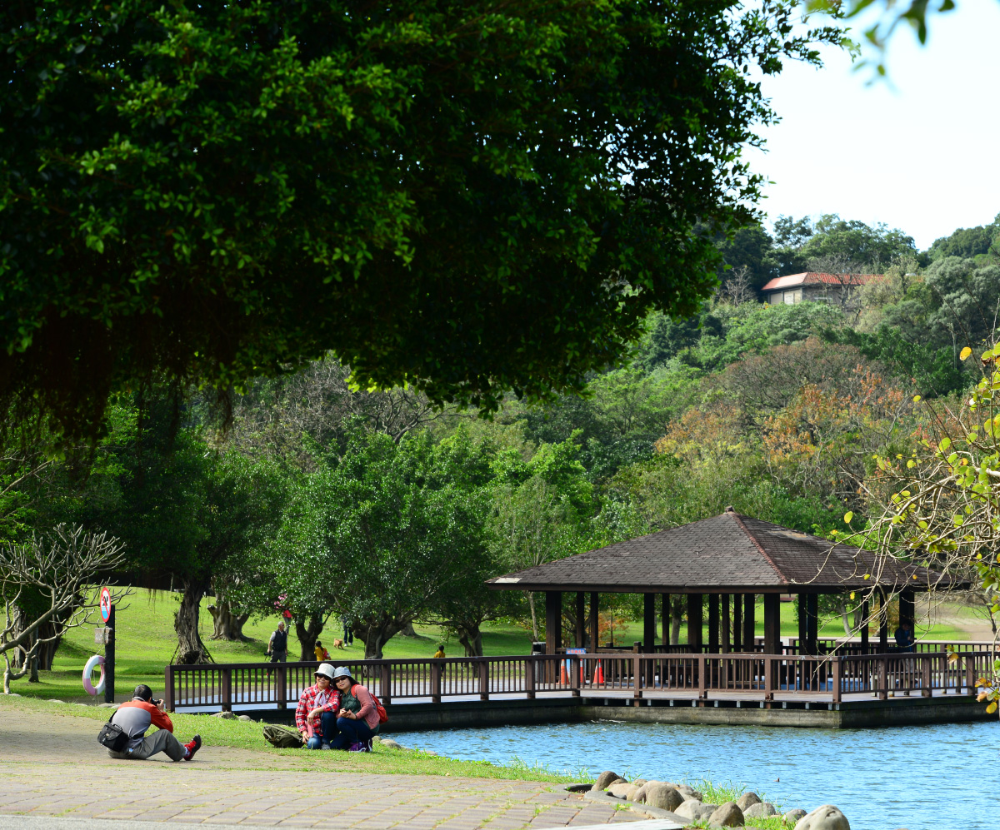
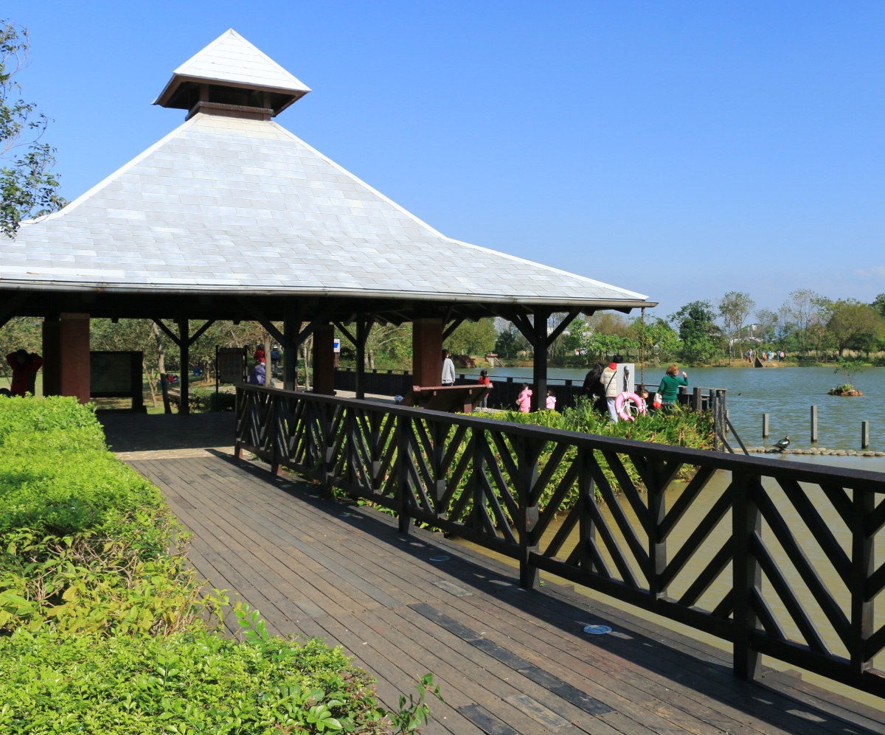
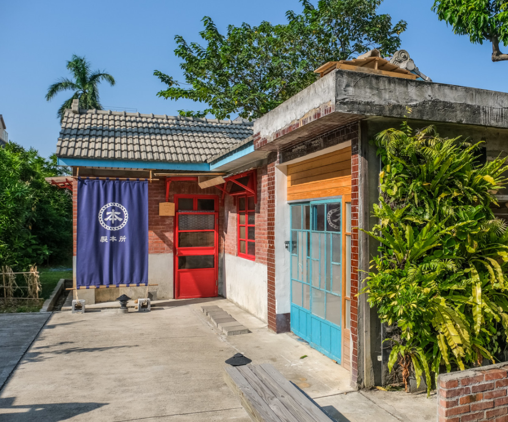
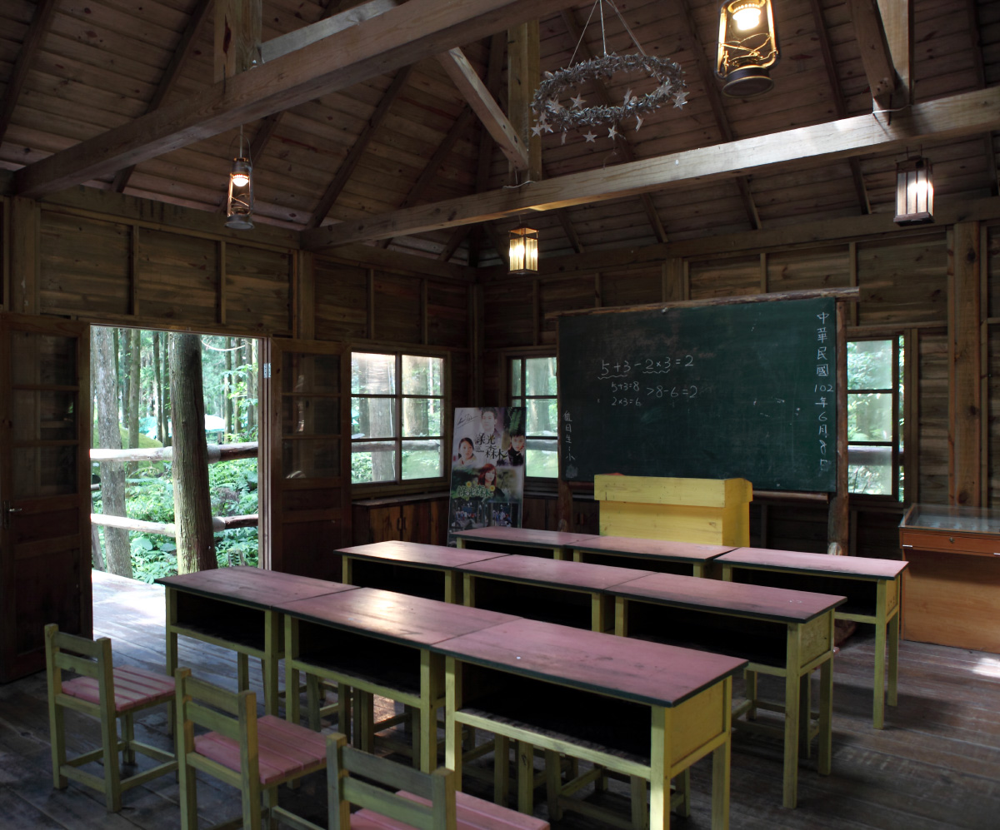

來到龍潭第一街就要大嗑古早味客家小吃﹔菜包
、牛汶水、草仔粿，可都別放過，吃飽喝足再去
永福宮、青錢第，來個復古三連拍。
玩味巴洛克建築語彙、來老商行體驗傳統木藝、
古廟參拜關聖帝君、品味老字號豆干…，要認識
大溪老城區文化，就從百年街屋開始。

早期以吃活魚聞名的石門水庫，近來增加了｢楓半馬｣
和｢熱氣球嘉年華｣兩大旅遊熱門標籤，老景點新玩法
，等你一一來發掘。
幾乎沒有人能抵擋新鮮海鮮的美味逆襲，跟港口賞
夕陽、看飛機同樣需列入行程清單的逛漁市，讓荷
包君不必哭泣就能滿足吃貨的胃。

昔日的軍事禁地不再，轉而是保有原始生態的忘憂
秘境，想放風想放鬆，就來後慈湖欣賞天寬地闊，
悠哉感受大自然的綠色療癒力。

不管是帶有神秘色彩的戰備隧道或是記錄蔣家日常
的行館，都令人充滿十足想像，秋冬時節，園中櫻
梅盛開，更為旅行增添不少驚艷。

總讓旅人念念不忘的濱海夕陽美景，幻彩天光水色
一上傳就瘋狂吸讚，同樣是旅程亮點的美味現撈海
鮮，吮指鮮甜，一嚐就對味。

沿途坡道平緩、綠蔭滿佈，旅行的意義不再是騎乘公
里數，而是全家大小一起踩著四輪、迎著徐徐海風、
談天說地的快樂時光。

翠綠山色倒映在湖心，步上木棧道靜賞這片如詩風景，
心也跟著悠然，途中想歇息，園裡的涼亭和遼闊草坪都
是推薦的舒心去處。

超大草皮加上和煦陽光就能成就一場美好的湖畔野餐約會
，除了享受美景美食之外，一旁還有水鳥野鴨優雅經過，
打造濃濃鄉村風。

乘載軍眷日常的屋舍，隨著歲月更迭，成了推廣質感生活
的創意基地﹔不定期舉辦的市集、名人講座、選物分享，
帶你走進諸般好時光。

挑張彩色椅，坐看雲海彩霞落羽松、園裡餵食小綿羊，療癒
你的心、三五好友BBQ，歡樂無極限…，不一會兒的時間你就
會戀上這片山。